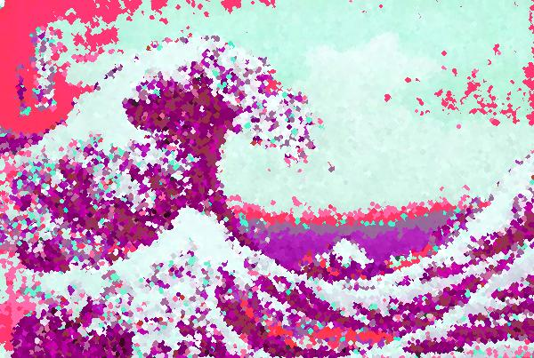

Home Resume Hobbies
Favorite Programs
These are all programs that I have either made myself or been a primary collaborator on.
First is "Spork Knight", a platformer game created in collaboration with Xander Lecompte.
Next is "Wordle Helper", created for a class assingment, which can be used to help you guess the daily Wordle
Personal RSA encryption: n=8051 e=5 email me
The following image was created by repeatedly filtering "The Great Wave of Kanagawa"
through a photo editing program created as a class assignment.
